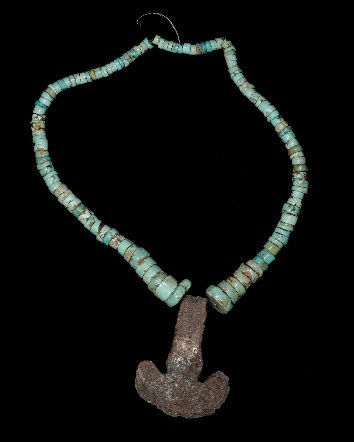
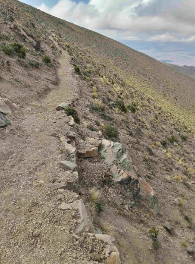
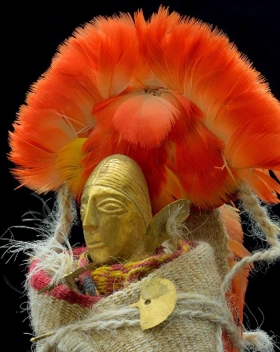
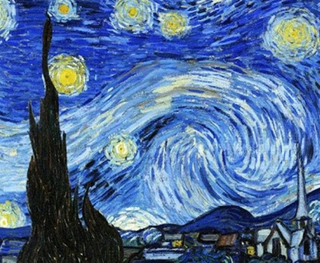

EXPOSICIONES
Sala la reina del cerro
Es en la década del ’20 cuando se tienen los primeros datos de este santuario ubicado en el Nevado de Chuscha (5.468 m.s.n.m), departamento de Cafayate, al sur de la provincia de Salta. Los lugareños encuentran y extraen, mediante el uso de dinamita, la ofrenda de una niña en un contexto incaico. A partir de ese momento, y hasta su llegada al MAAM, el cuerpo y los objetos que lo acompañaban sufrieron una serie de eventualidades a lo largo de los años. En el año 2001 la Fundación CEPPA (Centro de Estudios para Políticas Aplicadas) a cargo del Dr. Mateo Goretti adquiere el cuerpo y destina fondos para realizar los primeros estudios científicos. Se publica el libro “El santuario incaico del nevado de Chuscha” (Zona limítrofe Salta- Catamarca), contando con Juan Schobinger como compilador. Luego de 82 años, en el 2006, la momia del Chuscha es restituida a la provincia de Salta, y hasta la actualidad se encuentra en el Museo de Arqueología de Alta Montaña para resguardo y conservación.
Sala Qhapaq Ñan
El Estado incaico configuró una compleja organización política, social y económica con una gran capacidad para movilizar bienes, personas e información, asegurando a través de la red vial la comunicación y transporte hacia todos los puntos del territorio. Estos caminos partían desde el Cusco hacia las cuatro regiones del Tawantinsuyu, uniendo el espacio desde el sur de Colombia, hasta Mendoza en Argentina y el sur de Santiago en Chile a través de tramos que alcanzaron más de 40.000 mil kilómetros en su totalidad pero que se conocen actualmente alrededor de 25.000. Esta red fue marcada por sitios como tampus o tambos, chasquihuasis (casa de los mensajeros), puestos de observación, puestos administrativos de control de los centros de producción minera, agrícola y ganadera entre otros. kilómetros de estas rutas. En el año 2002 se inició el Proyecto Qhapaq Ñan con el objetivo de registrar, investigar y conservar el camino andino prehispánico y en junio del año 2014 el Vial Andino fue incluido en la Lista de Patrimonio Mundial de UNESCO. La nominación comprendió tramos de caminos y sitios asociados correspondientes a seis países: Colombia, Ecuador, Perú, Bolivia, Argentina y Chile. En Argentina, involucró a siete provincias: Jujuy, Salta, Tucumán, Catamarca, La Rioja, San Juan y Mendoza.
Sala Llullaillaco
Durante los meses de febrero y marzo de 1999, en el marco del Proyecto "Santuarios de Altura de los Andes del Sur", se realizaron investigaciones y excavaciones científicas en el volcán LLullaillaco de 6.739 metros de altura y ubicado en el departamento de Los Andes, al oeste de la provincia de Salta. Forma parte de la cordillera occidental andina y es una de las altas cumbres que fue utilizada por los geógrafos para marcar el límite internaciones con Chile. Estas investigaciones y excavaciones fueron dirigidas por el Dr. Johan Reinhard y la Dra. Constanza Ceruti, quienes coordinaron un equipo conformado por catorce personas entre montañistas y arqueólogos. El complejo arqueológico del volcán, comprende diversos sitios asociados a un camino y distribuidos desde la base hasta la cima. Sobre las laderas de la montaña, en diferentes cotas altitudinales, existen conjuntos de estructuras con distintas funcionalidades que sirvieron probablemente como campamentos intermedios para la ascensión a la cumbre. En la cima secundaria a 6.730 metros se localiza un conjunto arquitectónico conformado por dos recintos conocidos como “chozas dobles”, una estructura semicircular abierta denominada “paraviento” y un tramo de camino que conduce a una estructura rectangular o “plataforma ceremonial” que debió ser utilizada para la realización de la ceremonia Capacocha.
Pintura La Noche Estrellada
La noche estrellada es un óleo sobre lienzo del pintor postimpresionista neerlandés Vincent van Gogh . Pintado en junio de 1889, representa la vista desde la ventana orientada al este de su habitación de asilo en Saint-Rémy-de-Provence, justo antes del amanecer, con la adición de un pueblo imaginario. Ha estado en la colección permanente del Museo de Arte Moderno de la ciudad de Nueva York desde 1941, adquirida a través de Lillie P. Bliss Bequest. Ampliamente considerada como la obra maestra de Van Gogh. La noche estrellada es una de las pinturas más reconocidas en la historia de la cultura occidental.
Las Momias de Llullaillaco
.jpg "Imagen de las Momias de Llullaillaco")
Las Momias de Llullaillaco, también llamadas Niños de Llullaillaco y Niños del volcán, son los nombres con que se conocen los cuerpos de tres niños sacrificados por los incas excepcionalmente conservados por alrededor de quinientos años. Fueron hallados a una altura de 6739 msnm (22 109 pies) cerca de la cima del volcán Llullaillaco, en el oeste de la provincia de Salta, noroeste de Argentina. Actualmente se encuentran en exhibición en el Museo de Arqueología de Alta Montaña de Salta. Desde mediados del siglo XX se conocía, por los relatos de montañistas, la existencia de ruinas precolombinas en ese punto inhóspito de la cordillera de Los Andes. A casi 50 años de esos primeros descubrimientos se realizó una expedición financiada por la National Geographic Society y apoyada por autoridades provinciales y departamentales. En un trabajo mancomunado, montañistas y arqueólogos argentinos y peruanos, bajo la dirección del antropólogo estadounidense Johan Reinhard y la arqueóloga argentina Constanza Ceruti, sacaron a la luz lo que escondía celosamente el sitio arqueológico más alto del mundo. En marzo de 1999 fueron encontrados los cuerpos de un niño de siete años («El niño»), una niña de seis («La niña del rayo») y una adolescente de quince años («La doncella»). Su estado de conservación era tal, que varios expedicionarios coincidieron en afirmar que parecían estar dormidos. Junto a ellos se hallaron 46 objetos que componían su ajuar, formado por figuras humanas y animales en miniatura, utensilios y alimentos. Las tres momias incas encontradas cerca de la majestuosa cima del volcán Llullaillaco, en Argentina, estaban un estado de conservación tan bueno que permitieron ponerle cara al antiguo ritual de la capaccocha, cuyo colofón fue el sacrificio de los niños. Se cree que fue un sacrificio, ya que "La Doncella" estaba vestida con un vestido marrón claro ajustado en la cintura por una faja con dibujos geométricos donde combinan colores claros y oscuros con sus bordes rojos. Tiene un manto gris con guardas rojas,sostenida por un prendedor de plata a la altura del tórax, al igual que con muchas trenzas y como era de costumbre, adornos en la cabeza. "La Niña del Rayo" y "El niño" estaban de una forma en la que no se podía percibir las prendas fácilmente.
.jpg)
.png)